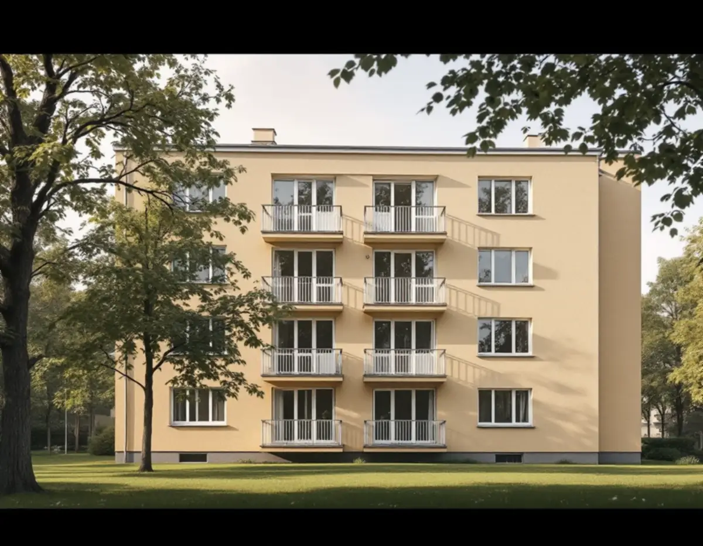
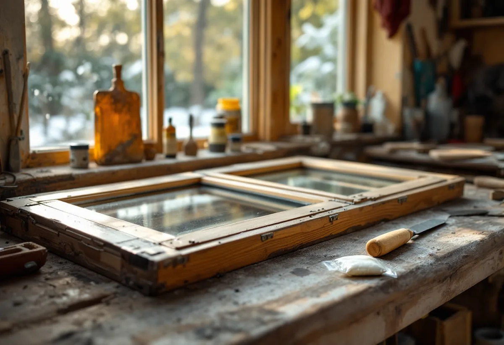

Byggår och miljö
Vi tar reda på när huset byggdes och om det ligger i en av stadens utpekade miljöer.
Solna stad pekar ut fyra miljöer med 1950-talsbebyggelse bland stadens sammanhängande kulturhistoriskt värdefulla miljöer. Geal Entreprenad AB renoverar fönster i Solna, och i hus från de åren börjar vi med kittet och fogarna innan något skrapas bort.

På stadens sida om kulturmiljöer finns en lista över sammanhängande kulturhistoriskt värdefulla miljöer, där helheten bedöms som viktig. Det rör sig ofta om enhetliga miljöer som är goda representanter för sin tid, och det är helhetsintrycket som räknas. Fyra av miljöerna är 1950-talsbebyggelse: i Råsunda, vid Förvaltarvägen med kv Fjorden, kv Nordan och Stinsbostaden vid Solna station, i Skytteholm och i Huvudsta. På listan finns också äldre miljöer som Råsunda villastad, stenstaden i Råsunda, Gamla Hagalund och Råsta egnahem.
Staden skriver att det är mycket viktigt att ta hänsyn till husens ursprungliga karaktär när de anpassas till nya behov, så att deras historiska värde inte går förlorat. Därför renoverar vi fönstren med samma indelning och kulör som förut.

Boverket skriver att asbest förbjöds inom byggsektorn 1982 men att stora mängder finns kvar, och att det främst är byggnader uppförda mellan 1940 och 1970 som innehåller asbest. Är huset byggt 1940–1980 är det enligt Boverket sannolikt att det finns asbest någonstans i byggnaden. Fönsterkitt, fogmassor och tätmassor finns med på verkets lista över material där asbest kan förekomma, och i regel krävs att ett prov analyseras i mikroskop för att veta. Boverkets energiguide råder dig också att undersöka om gamla fogmassor innehåller till exempel PCB eller asbest, som är saneringspliktigt.
Därför tar vi prov på kitt och fogar i hus från de här årtiondena innan något skrapas eller värms bort. Arbetsmiljöverket kräver tillstånd för att ett företag ska få riva eller sanera material som innehåller asbest, och förarbete på platsen, omhändertagande av avfallet och städning efteråt räknas också som sanering. Visar provet asbest anlitar vi ett företag med sådant tillstånd för just den delen.
Under första hälften av 1900-talet infördes enligt Länsstyrelsernas fönsterblad det kopplade fönstret med två utåtgående bågar. Riksantikvarieämbetet påpekar att linoljefärg ännu på 1950-talet var den färg som förespråkades för utvändig snickerimålning, och att grundning och två strykningar var det minsta som borde utföras enligt Hantverkets bok från 1953.
Skriften beskriver också de krav som före 1950-talet ställdes på fönstervirke – avverkat under vinterhalvåret, lufttorkat och lagrat ett par år före användning – och att de omfattande skador som visat sig på 1960- och 1970-talens fönster delvis beror på olämpligt lösta konstruktionsdetaljer. Vid lagning är det enligt skriften viktigt att det nya virket liknar det gamla, och det är så vi väljer det.
Solna stad skriver att bygglov krävs för fasadändring på en byggnad som inte är ett en- eller tvåbostadshus inom detaljplan, när ändringen görs på en fasad eller ett tak som vetter mot allmän plats. Lov krävs också för ändringar på särskilt värdefulla byggnader och i särskilt värdefulla områden. Byte av fasadfärg är ett av stadens exempel på fasadändringar. Ska bågarna i ett flerbostadshus få en ny kulör mot gatan tar vi därför upp lovfrågan med staden innan arbetet börjar.
Bor du i bostadsrätt skriver staden att du behöver fastighetsägarens medgivande för byggåtgärder. För villaägare gäller utökad lovplikt i stora delar av Solna, och de vanligaste skälen är särskilt värdefulla kulturmiljöer och riksintressen. Fasadens puts och snickerier tar vi upp under fasadrenovering i Solna, och nya fönster under fönsterbyte.
Vi tar reda på när huset byggdes och om det ligger i en av stadens utpekade miljöer.
I hus från 1940–1980 tas prov innan något tas bort.
Lagning, eventuell sanering, kittning och målning redovisas var för sig.
Föreningens medgivande och eventuellt lov klaras av innan arbetet börjar.
Skadat virke byts mot virke som liknar det gamla.
Grundning och minst två strykningar på utsidan.
I en villa eller ett radhus som du äger räknar Skatteverket reparation och målning av fönster som rotarbete, och sanering av asbest ger avdrag när den görs i samband med byggarbete. Själva provet ger inget avdrag, eftersom Skatteverket inte godkänner att mäta asbest. I en bostadsrätt ger bara arbete på insidan avdrag, till exempel att måla insidan av fönstren eller byta glaset i innerbågen.
Avdraget är högst 30 procent av arbetskostnaden, som mest 50 000 kr per person och år och 75 000 kr inklusive rutavdrag. Vi drar det direkt på fakturan.
Antalet fönster, om prov och sanering av kitt eller fogar behövs, hur mycket virke som ska bytas och om en ny kulör kräver lov påverkar mest. Efter ett gratis platsbesök får du ett skriftligt kostnadsförslag.
Byta eller renovera fönster.
Fönsterbyte i Stockholm →Takbyte, takbesiktning och plåtarbeten.
Takläggare i Solna →Råsunda, Stocksundstorp och Råsta.
Takrenovering i Solna →Kulturmiljöerna, kartan och lovet.
Attefallshus i Solna →Ritningar, kontrollplan och slutbesked.
Byggföretag i Solna →Radhusen, föreningen och lovet.
Fasadmålning i Solna →Putsade villor och krav på material.
Fasadrenovering i Solna →Råsunda, bygglovet och handlingarna.
Fönsterbyte i Solna →Bostadsrätt, stambyte och villor.
Badrumsrenovering i Solna →Bostadsrätter i Råsunda, Hagalund och Huvudsta.
Golvläggare i Solna →Ta fram och slipa trägolvet under mattan.
Golvslipning i Solna →Bostadsrätter, fläktar och Råsundas villor.
Köksrenovering i Solna →Villor, radhus och lägenheter i Solna.
Målare i Solna →Plåt i Solnas kulturmiljöer.
Plåtslagare i Solna →Väggar, dörrar, balkong och radhus.
Snickare i Solna →Gatusidan, gårdssidan och konstruktionen.
Takbyte i Solna →Tapet efter husets ålder och underlag.
Tapetsering i Solna →Kulturmiljöerna och lovet.
Tillbyggnad i Solna →Hela lägenheten, elen inräknad.
Totalrenovering i Solna →